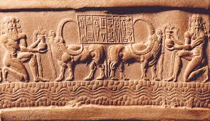
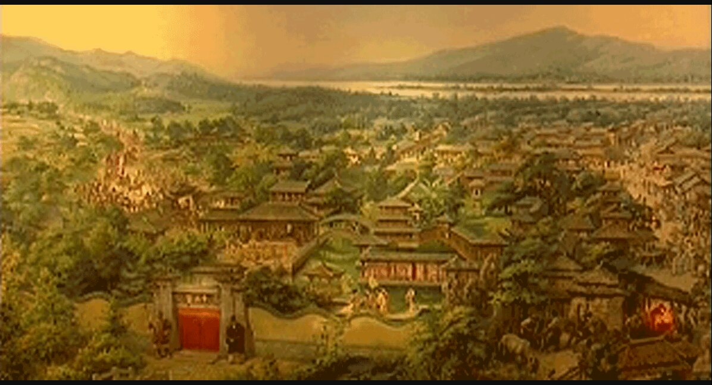
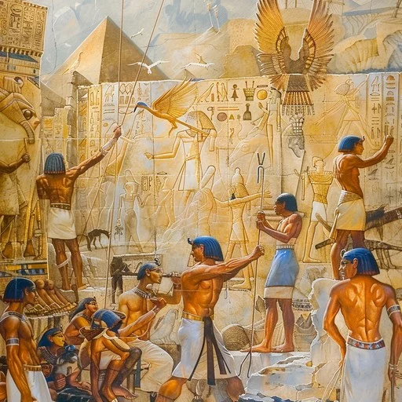

Echoes of the Ancient World
Three great empires that shaped the foundations of human history — their legacies still echo across millennia.

c. 3500 – 539 BCE · Tigris–Euphrates Valley
Nestled between the Tigris and Euphrates rivers in modern-day Iraq, Mesopotamia was humanity's first urban civilization. The Sumerians, Akkadians, Babylonians, and Assyrians built towering ziggurats, codified the first laws, and left the earliest written records in history.
Key Achievements — click to explore

c. 2100 – 221 BCE · Yellow River Valley
Born along the banks of the Yellow River, Chinese civilization is one of the oldest continuous cultures on Earth. From the legendary Xia dynasty to the unification under Qin Shi Huang, ancient China gave the world silk, paper, gunpowder, and a rich philosophical tradition.
Key Achievements — click to explore

c. 3100 – 30 BCE · Nile Valley
Rising from the fertile banks of the Nile, Ancient Egypt was a civilization of extraordinary ambition and artistry. For over three thousand years, the pharaohs ruled a society that built monumental pyramids, developed hieroglyphic writing, and created a rich mythology still captivating the world today.
Key Achievements — click to explore
Study the past if you would define the future.
— Confucius, c. 500 BCE
Five questions. How much of history do you carry?
How did these three great powers shape the ancient world?
| 🏛 Mesopotamia | 🐉 Ancient China | 🔺 Ancient Egypt | |
|---|---|---|---|
| Period | c. 3500 – 539 BCE | c. 2100 – 221 BCE | c. 3100 – 30 BCE |
| Region | Tigris–Euphrates | Yellow River Valley | Nile River Valley |
| Writing | Cuneiform | Oracle Bone Script | Hieroglyphics |
| Government | City-states & empires | Dynastic monarchy | Pharaonic rule |
| Religion | Polytheistic (Marduk, Enlil) | Ancestor worship, Taoism | Polytheistic (Ra, Osiris) |
| Key Legacy | Law, astronomy, writing | Paper, silk, philosophy | Pyramids, calendar, medicine |
| Decline | Persian conquest, 539 BCE | Qin unification, 221 BCE | Roman conquest, 30 BCE |